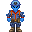
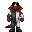

Template:Autowiki/Ship
{{Autowiki/Ship|name=Riggs-class Sloop|shortname=Riggs-class|description=The Rigger-class is Kasagi-Fischer Partnership’s mainstay in the independent ship market. Spacious, affordable, and versatile, Riggers offer basic capabilities for everything a Frontier spacer might need in a convenient, easy-to-modify platform, and by default come equipped with a basic medbay, a small security office, atmospherics recycling and equipment to support an APLU utility mech. Thanks to this versatility, Riggers have become extremely popular among moderately-wealthy independent captains, and can be found doing everything from mining to shipping to surveying Frontier planets.|prefix=SV|tags=Mining, Medical, Robotics, Generalist|limit=2|crewCount=13|crew={{Autowiki/ShipCrewMember|name=Captain|officer=Yes|slots=1|icon=Captain (Western)}}{{Autowiki/ShipCrewMember|name=First Mate|officer=Yes|slots=1|icon=First Mate (Western)}}{{Autowiki/ShipCrewMember|name=Ship's Doctor|officer=No|slots=1|icon=Medical Doctor}}{{Autowiki/ShipCrewMember|name=Machinist's Mate|officer=No|slots=2|icon=Mechanic}}{{Autowiki/ShipCrewMember|name=Asteroid Miner|officer=No|slots=2|icon=Asteroid Miner (Hazard)}}{{Autowiki/ShipCrewMember|name=Mech Technician|officer=No|slots=1|icon=Mech Technician (Industrial)}}{{Autowiki/ShipCrewMember|name=Security Detail|officer=No|slots=1|icon=Security Detail (Western)}}{{Autowiki/ShipCrewMember|name=Deckhand|officer=No|slots=4|icon=Assistant}}|enabled=Yes|size=Medium}}
| Short Name: | Riggs-class |
| Manufacturer: | Unknown |
| Faction: | Unspecified (Prefix: SV) |
| Crew Size: | 13 |
| Size: | Medium |
| Tags: | Mining, Medical, Robotics, Generalist |
| Buyable: | Yes |
The Rigger-class is Kasagi-Fischer Partnership’s mainstay in the independent ship market. Spacious, affordable, and versatile, Riggers offer basic capabilities for everything a Frontier spacer might need in a convenient, easy-to-modify platform, and by default come equipped with a basic medbay, a small security office, atmospherics recycling and equipment to support an APLU utility mech. Thanks to this versatility, Riggers have become extremely popular among moderately-wealthy independent captains, and can be found doing everything from mining to shipping to surveying Frontier planets.
| Preview | Name | Officer | Slots |
|---|---|---|---|
| Captain | Yes | 1 | |
| First Mate | Yes | 1 | |
 |
Ship's Doctor | No | 1 |
|  | Machinist's Mate | No | 2 |
| Asteroid Miner | No | 2 | |
| Mech Technician | No | 1 | |
| Security Detail | No | 1 | |
 |
Deckhand | No | 4 |
Works with spaces in the name now
{{Autowiki/Ship|name=Li Tieguai-class Rescue Ship|shortname=Li Tieguai-class|description=A small, nimble, and exceptionally well-built medical response vessel, the Li Tieguai is a recent addition to Cybersun’s fleet, forming a critical component of their Frontier stabilization program. Li Tieguais come equipped with high-end medical equipment, including a selection of Cybersun augments and prosthetics, as well as weaponry and armor sufficient to protect its personnel in the often-dangerous Frontier sectors, so that they can offer premium healthcare (at premium prices) in even the most dangerous of scenarios.|prefix=CSSV|tags=Medical|limit=2|crewCount=8|crew={{Autowiki/ShipCrewMember|name=Captain|officer=No|slots=1|icon=Syndicate - Captain (Cybersun)}}{{Autowiki/ShipCrewMember|name=Medical Director|officer=Yes|slots=1|icon=Syndicate - Medical Director (Cybersun)}}{{Autowiki/ShipCrewMember|name=Trauma Team Technician|officer=No|slots=3|icon=Syndicate - Medical Doctor (Cybersun)}}{{Autowiki/ShipCrewMember|name=Cybersun Medical Intern|officer=No|slots=3|icon=Syndicate - Junior Agent (Cybersun)}}|enabled=Yes|size=Medium}}

| Short Name: | Li Tieguai-class |
| Manufacturer: | Unknown |
| Faction: | Unspecified (Prefix: CSSV) |
| Crew Size: | 8 |
| Size: | Medium |
| Tags: | Medical |
| Buyable: | Yes |
A small, nimble, and exceptionally well-built medical response vessel, the Li Tieguai is a recent addition to Cybersun’s fleet, forming a critical component of their Frontier stabilization program. Li Tieguais come equipped with high-end medical equipment, including a selection of Cybersun augments and prosthetics, as well as weaponry and armor sufficient to protect its personnel in the often-dangerous Frontier sectors, so that they can offer premium healthcare (at premium prices) in even the most dangerous of scenarios.
| Preview | Name | Officer | Slots |
|---|---|---|---|
.png) |
Captain | No | 1 |
.png) |
Medical Director | Yes | 1 |
| Trauma Team Technician | No | 3 | |
|  | Cybersun Medical Intern | No | 3 |